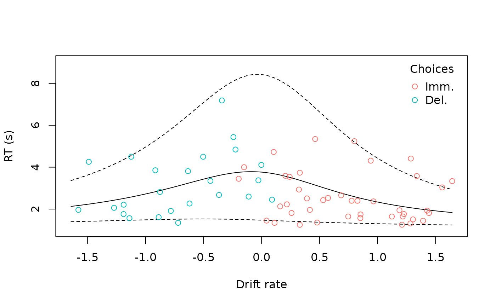

The drift diffusion model
Drift diffusion models (DDMs; Ratcliff, 1978) predict not only binary choices but also response times (RTs), and can be applied to intertemporal choice data (Peters & D’Esposito, 2020). DDMs model decision making as a process of noisy evidence accumulation in which the evidence begins at some value and evolves according to the stochastic differential equation
where
is the drift rate, and
is normally distributed noise with 0 mean and unit variance. Evidence
begins accumulating after a non-decision period
and is complete once
reaches either 0 (meaning the delayed reward is chosen) or a threshold
(meaning the immediate reward is chosen). Thus, the model captures
speed-accuracy tradeoffs: as
increases, decisions will be slower but more “accurate” (i.e.,
reflective of the decision maker’s relative preferences). This package
relies on Wabersich and
Vandekerckhove’s (2014) RWiener
to compute first passage times for the diffusion process.
Following Peters & D’Esposito (2020), the drift rate is computed by multiplying the difference in subjective values by a scale factor :
where is the value of the immediate reward, is the value of the delayed reward, and is a discount function parameterized by and evaluated at the delay of the delayed reward (i.e., in this equation does not refer to time within a single decision trial as in the previous equation).
Fitting drift diffusion models
Often, extreme RTs are first excluded, using either absolute or relative cutoffs. Here, we will exclude the fastest 2.5% and slowest 2.5% of responses.
data("td_bc_single_ptpt")
rt_cutoffs <- quantile(td_bc_single_ptpt$rt, c(0.025, 0.975))
td_bc_single_ptpt <- subset(td_bc_single_ptpt, rt > rt_cutoffs[1] & rt < rt_cutoffs[2])Next, we can fit a drift diffusion model. Here, for the sake of speed, we are providing starting values for the parameters that are close to optimal and are only testing the exponential discount function.
ddm <- td_ddm(td_bc_single_ptpt, discount_function = 'exponential',
v_par_starts = 0.01,
beta_par_starts = 0.5,
alpha_par_starts = 3.5,
tau_par_starts = 0.9)
print(ddm)
#>
#> Temporal discounting drift diffusion model
#>
#> Discount function: exponential
#> Coefficients:
#>
#> k v beta alpha tau
#> 0.009518797 0.008810812 0.574805668 3.462444316 0.946851140
#>
#> "none" transform applied to drift rates.
#>
#> ED50: 72.8187765186714
#> AUC: 0.0287625702305513
#> BIC: 236.382759846412As we can see, parameters are estimated not only for the discount
function
(),
but also for the DDM
(,
,
and
).
These can be extracted using coef() to collect for
group-level analysis (see the vignette “Analyzing data from multiple
participants”). As with other model classes (td_bcnm,
td_bclm), we can plot the resulting discount function:
plot(ddm, log = 'x', verbose = F)Here the gaps correspond to very fast or slow decisions that we excluded.
Moreover, because DDMs model RTs, we can compare predicted RTs to the actual data:
predicted_rts <- predict(ddm, type = 'rt')
cor.test(predicted_rts, ddm$data$rt)
#>
#> Pearson's product-moment correlation
#>
#> data: predicted_rts and ddm$data$rt
#> t = 2.6422, df = 64, p-value = 0.01034
#> alternative hypothesis: true correlation is not equal to 0
#> 95 percent confidence interval:
#> 0.07746325 0.51644776
#> sample estimates:
#> cor
#> 0.3136161As expected, they are correlated. To compare these visually, we can
plot() the DDM wiht the argument
type = "rt":
plot(ddm, type = 'rt', confint = 0.9)
#> Warning in plot.window(...): "confint" is not a graphical parameter
#> Warning in plot.xy(xy, type, ...): "confint" is not a graphical parameter
#> Warning in axis(side = side, at = at, labels = labels, ...): "confint" is not a
#> graphical parameter
#> Warning in axis(side = side, at = at, labels = labels, ...): "confint" is not a
#> graphical parameter
#> Warning in box(...): "confint" is not a graphical parameter
#> Warning in title(...): "confint" is not a graphical parameter
This displays both the predicted RTs from the model and a 90% confidence interval
Fontanesi et al. (2019) suggest applying a sigmoid transform to drift rates according the the following equation, which is reported by Peters & D’Esposito (2020) to improve model fit for intertemporal choice data:
We can incorporate this into the model using the argument
drift_transform = "sigmoid":
ddm_sig <- td_ddm(td_bc_single_ptpt, discount_function = 'exponential', drift_transform = 'sigmoid',
v_par_starts = 0.01,
beta_par_starts = 0.5,
alpha_par_starts = 3.5,
tau_par_starts = 0.9)
print(BIC(ddm))
#> [1] 236.3828
print(BIC(ddm_sig))
#> [1] 230.1002Sure enough, the model with the sigmoid transform performs better per the Bayesian information criterion. Plotting the probability of choosing the immediate reward against the drift rate, we can see that many datapoints are pushed to either extreme, creating good separation between cases where the immediate versus delayed rewards were chosen.
plot(ddm_sig, type = 'link')